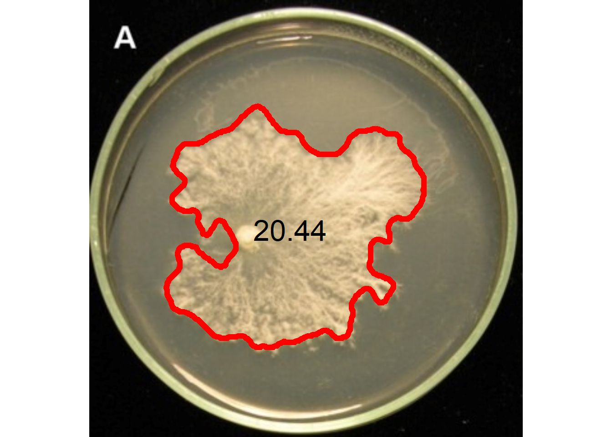

setwd("E:/Desktop/UFSC/cursos/pliman_tut/imgs")Phytopathometry
1 Directory
2 Disease severity
3 Using image indexes
The following image1 shows symptoms of anthracnose (Elsinoë ampelina) on grape leaves.
library(pliman)
library(tidyverse)
img <- image_import("videira.png", plot = TRUE)
sev <-
measure_disease(img,
index_lb = "G",
index_dh = "G-R",
show_segmentation = TRUE)
sev$severity healthy symptomatic
1 83.30028 16.699724 Using sample palettes
Sample palettes can be made by simply manually sampling small areas of representative images and producing a composite image that will represent each of the desired classes (background, healthy, and symptomatic tissues).
h <- image_import("videira_h.png")
d <- image_import("videira_d.png")
b <- image_import("videira_b.png")
image_combine(img, h, d, b, ncol = 4)
4.1 Producing sample palettes
Users can produce these palettes with pick_palette() function.
h2 <- pick_palette(img)
d2 <- pick_palette(img)
b2 <- pick_palette(img)
image_combine(h2, d2, b2, ncol = 3)4.1.1 Defaults settings
sev <-
measure_disease(img = img,
img_healthy = h,
img_symptoms = d,
img_background = b)
sev$severity healthy symptomatic
1 85.66133 14.338674.1.2 Filling lesions
sev <-
measure_disease(img = img,
img_healthy = h,
img_symptoms = d,
img_background = b,
show_contour = FALSE)
4.1.3 Showing a mask
sev <-
measure_disease(img = img,
img_healthy = h,
img_symptoms = d,
img_background = b,
show_original = FALSE,
col_lesions = "brown") # default is "black"
4.1.4 Segmenting and analyzing lesions
When using show_features = TRUE, the function analyzes the lesions and returns results such as number of lesions, area, perimeter, etc. With show_segmentation = TRUE, segmented lesions are shown.
sev <-
measure_disease(img = img,
img_healthy = h,
img_symptoms = d,
img_background = b,
show_features = TRUE,
watershed = TRUE,
show_segmentation = TRUE)
# correct the measures (dpi = 150)
sev_corrected <- get_measures(sev, dpi = 150)5 Batch processing
To analyze several images from a directory, use the pattern argument to declare a pattern of filenames. Here, we Will used 50 soybean leaves available in the repository https://osf.io/4hbr6, a database of images of annotation of severity of plant diseases. Thanks to Emerson M. Del Ponte and his contributors for keeping this project publicly available. Using the save_image = TRUE argument we save the processed images in a temporary directory, defined by tempdir().
# criar um diretório temporário
temp_dir <- tempdir()
system.time(
sev_lote <-
measure_disease(pattern = "soy",
img_healthy = "soja_h",
img_symptoms = "soja_s",
img_background = "soja_b",
show_image = FALSE,
save_image = TRUE,
dir_processed = temp_dir,
show_contour = FALSE,
col_lesions = "brown")
)Processing image soy_1 |= | 2% 00:00:00 Processing image soy_10 |== | 4% 00:00:02 Processing image soy_11 |== | 6% 00:00:04 Processing image soy_12 |=== | 8% 00:00:06 Processing image soy_13 |==== | 10% 00:00:08 Processing image soy_14 |===== | 12% 00:00:09 Processing image soy_15 |====== | 14% 00:00:11 Processing image soy_16 |====== | 16% 00:00:11 Processing image soy_17 |======= | 18% 00:00:13 Processing image soy_18 |======== | 20% 00:00:15 Processing image soy_19 |========= | 22% 00:00:17 Processing image soy_2 |========== | 24% 00:00:18 Processing image soy_20 |========== | 26% 00:00:19 Processing image soy_21 |=========== | 28% 00:00:21 Processing image soy_22 |============ | 30% 00:00:23 Processing image soy_23 |============= | 32% 00:00:24 Processing image soy_24 |============== | 34% 00:00:25 Processing image soy_25 |============== | 36% 00:00:27 Processing image soy_26 |=============== | 38% 00:00:29 Processing image soy_27 |================ | 40% 00:00:30 Processing image soy_28 |================= | 42% 00:00:32 Processing image soy_29 |================== | 44% 00:00:34 Processing image soy_3 |=================== | 46% 00:00:35 Processing image soy_30 |=================== | 48% 00:00:37 Processing image soy_31 |==================== | 50% 00:00:38 Processing image soy_32 |===================== | 52% 00:00:39 Processing image soy_33 |====================== | 54% 00:00:40 Processing image soy_34 |====================== | 56% 00:00:42 Processing image soy_35 |======================= | 58% 00:00:44 Processing image soy_36 |======================== | 60% 00:00:45 Processing image soy_37 |========================= | 62% 00:00:47 Processing image soy_38 |========================== | 64% 00:00:48 Processing image soy_39 |========================== | 66% 00:00:49 Processing image soy_4 |============================ | 68% 00:00:50 Processing image soy_40 |============================ | 70% 00:00:52 Processing image soy_41 |============================= | 72% 00:00:52 Processing image soy_42 |============================== | 74% 00:00:54 Processing image soy_43 |============================== | 76% 00:00:56 Processing image soy_44 |=============================== | 78% 00:00:57 Processing image soy_45 |================================ | 80% 00:00:59 Processing image soy_46 |================================= | 82% 00:01:00 Processing image soy_47 |================================== | 84% 00:01:02 Processing image soy_48 |================================== | 86% 00:01:03 Processing image soy_49 |=================================== | 88% 00:01:04 Processing image soy_5 |===================================== | 90% 00:01:05 Processing image soy_50 |===================================== | 92% 00:01:06 Processing image soy_6 |======================================= | 94% 00:01:08 Processing image soy_7 |======================================= | 96% 00:01:09 Processing image soy_8 |======================================== | 98% 00:01:09 Processing image soy_9 |=========================================| 100% 00:01:10 usuário sistema decorrido
63.16 9.00 72.54 sev_lote$severity img healthy symptomatic
1 soy_1 92.561965 7.4380352
2 soy_10 56.596436 43.4035636
3 soy_11 87.854282 12.1457181
4 soy_12 63.824984 36.1750164
5 soy_13 51.207163 48.7928367
6 soy_14 99.693826 0.3061742
7 soy_15 73.035175 26.9648246
8 soy_16 30.754927 69.2450734
9 soy_17 21.340046 78.6599542
10 soy_18 81.341313 18.6586875
11 soy_19 38.054795 61.9452046
12 soy_2 85.326771 14.6732286
13 soy_20 34.626454 65.3735459
14 soy_21 34.734468 65.2655318
15 soy_22 77.721269 22.2787314
16 soy_23 60.208081 39.7919193
17 soy_24 75.373663 24.6263373
18 soy_25 9.667896 90.3321045
19 soy_26 26.751170 73.2488304
20 soy_27 31.829014 68.1709861
21 soy_28 55.915927 44.0840730
22 soy_29 24.103095 75.8969050
23 soy_3 16.226228 83.7737724
24 soy_30 44.380500 55.6195004
25 soy_31 14.101584 85.8984162
26 soy_32 45.929325 54.0706752
27 soy_33 90.295207 9.7047926
28 soy_34 49.138473 50.8615267
29 soy_35 60.169551 39.8304491
30 soy_36 92.958299 7.0417013
31 soy_37 39.323625 60.6763747
32 soy_38 52.630456 47.3695438
33 soy_39 40.190882 59.8091178
34 soy_4 65.752480 34.2475201
35 soy_40 71.668418 28.3315815
36 soy_41 96.968643 3.0313569
37 soy_42 86.576751 13.4232486
38 soy_43 90.320852 9.6791485
39 soy_44 57.757194 42.2428058
40 soy_45 83.155734 16.8442658
41 soy_46 84.100800 15.8992001
42 soy_47 77.391598 22.6084023
43 soy_48 76.212081 23.7879192
44 soy_49 69.778843 30.2211566
45 soy_5 80.179465 19.8205352
46 soy_50 61.072367 38.9276334
47 soy_6 65.925521 34.0744787
48 soy_7 57.404769 42.5952313
49 soy_8 44.434393 55.5656072
50 soy_9 79.166022 20.83397816 Standard area diagrams
Standard area diagrams (SAD) have long been used as a tool to aid the estimation of plant disease severity, serving as a standard reference template before or during the assessments. Given an object computed with measure_disease() a Standard Area Diagram (SAD) with n images containing the respective severity values are obtained with sad().
Leaves with the smallest and highest severity will always be in the SAD. If n = 1, the leaf with the smallest severity will be returned. The others are sampled sequentially to achieve the n images after severity has been ordered in ascending order. For example, if there are 30 leaves and n is set to 3, the leaves sampled will be the 1st, 15th, and 30th with the smallest severity values.
The SAD can be only computed if an image pattern name is used in argument pattern of measure_disease(). If the images are saved, the n images will be retrevied from dir_processed directory. Otherwise, the severity will be computed again to generate the images. A SAD with 8 images from the above example can be obtained easely with:
sad(sev_lote, n = 9, ncol = 3)
img healthy symptomatic rank
6 soy_14 99.693826 0.3061742 1
3 soy_11 87.854282 12.1457181 7
45 soy_5 80.179465 19.8205352 13
7 soy_15 73.035175 26.9648246 19
46 soy_50 61.072367 38.9276334 25
21 soy_28 55.915927 44.0840730 31
24 soy_30 44.380500 55.6195004 37
20 soy_27 31.829014 68.1709861 43
18 soy_25 9.667896 90.3321045 507 Parallel processing
To speed up processing time when multiple images are available, you can use the paralell argument. In parallel programming (parallel = TRUE), the images are processed asynchronously (in parallel) in separate R sessions running in the background on the same machine. The number of sections is set by default to 50% of available cores. This number can be controlled explicitly with the argument workers.
system.time(
sev_lote <-
measure_disease(pattern = "soy",
img_healthy = "soja_h",
img_symptoms = "soja_s",
img_background = "soja_b",
show_image = FALSE,
parallel = TRUE)
)Image processing using multiple sessions (6). Please wait. usuário sistema decorrido
0.67 0.16 24.42 8 Multiple images of the same sample
If users need to analyze multiple images from the same sample, the images from the same sample must share the same filename prefix, which is defined as the part of the filename that precedes the first hyphen (-) or underscore (_).
In the following example, 16 images will be used as examples. Here, they represent four replicates of four different treatments (TRAT1_1, TRAT1_2, ..., TRAT4_4). Note that to ensure that all images are processed, all images must share a common pattern, in this case ("TRAT").
system.time(
sev_trats <-
measure_disease(pattern = "TRAT",
img_healthy = "feijao_h",
img_symptoms = "feijao_s",
img_background = "feijao_b",
show_features = TRUE,
show_image = FALSE,
parallel = TRUE)
)Image processing using multiple sessions (6). Please wait. usuário sistema decorrido
0.47 0.06 17.41 sev <-
sev_trats$severity |>
separate_col(img, into = c("TRAT", "REP"))
ggplot(sev, aes(TRAT, symptomatic))+
geom_boxplot() +
geom_jitter(alpha = 0.3) +
labs(x = "Tratamentos",
y = "Severidade (%)")
9 Multiple leaves in one image
When multiple leaves are present in an image, the measure_disease function returns the average severity of the leaves present in the image. To quantify the severity per leaf, the measure_disease_byl() function can be used.
This function computes the percentage of symptomatic leaf area using color palettes or RGB indices for each leaf (byl) of an image. This allows, for example, to process replicates of the same treatment and obtain the results of each replication with a single image. To do this, the sample sheets are first split using the object_split() function and then the measure_disease() function is applied to the sheet list.
byl <-
measure_disease_byl(pattern = "multiplas_02",
index = "B", # used to segment leaves from background
img_healthy = "soja_h",
img_symptoms = "soja_s",
show_contour = FALSE,
show_features = TRUE,
col_lesions = "red",
parallel = TRUE)Image processing using multiple sessions (6). Please wait.results_byl <- get_measures(byl)
results_byl$results |>
head() img leaf id x y area area_ch perimeter radius_mean
1 multiplas_02 1 1 173.868 83.074 68 74 41.799 4.997
2 multiplas_02 1 2 239.600 105.906 532 682 127.397 13.834
3 multiplas_02 1 3 138.765 103.382 102 91 36.556 5.271
4 multiplas_02 1 4 199.275 131.895 1231 1750 219.208 19.998
5 multiplas_02 1 7 158.510 132.255 412 553 118.983 11.133
6 multiplas_02 1 9 222.395 118.116 43 37 27.142 3.114
radius_min radius_max radius_sd diam_mean diam_min diam_max major_axis
1 1.065 8.855 2.250 9.993 2.130 17.709 19.381
2 2.926 24.100 5.089 27.667 5.852 48.200 44.282
3 3.682 6.872 0.916 10.543 7.364 13.744 13.962
4 5.972 31.538 7.021 39.996 11.944 63.075 60.985
5 1.067 19.014 4.042 22.265 2.134 38.028 33.385
6 0.962 4.417 0.869 6.227 1.924 8.834 8.613
minor_axis length width radius_ratio eccentricity theta solidity convexity
1 5.659 16.502 6.320 8.314 0.106 0.368 0.919 0.904
2 19.295 44.026 24.129 8.237 0.239 0.011 0.780 0.836
3 9.436 13.153 8.890 1.866 0.533 -0.136 1.121 0.923
4 34.627 60.931 42.755 5.281 0.442 1.546 0.703 0.567
5 22.275 33.887 24.048 17.821 0.481 0.607 0.745 0.650
6 7.148 8.230 6.324 4.592 0.694 0.290 1.162 0.733
elongation circularity circularity_haralick circularity_norm coverage asm
1 0.617 25.693 2.221 2.867 0.000 0.091
2 0.452 30.507 2.718 2.716 0.001 0.024
3 0.324 13.102 5.754 1.259 0.000 0.064
4 0.298 39.035 2.848 3.362 0.003 0.025
5 0.290 34.361 2.754 3.134 0.001 0.038
6 0.232 17.132 3.583 1.954 0.000 0.076
con cor var idm sav sva sen ent dva den f12 f13
1 1.312 0.460 2.216 0.624 27.312 702.276 0.879 1.191 1.312 0.478 0.126 0.385
2 1.954 0.852 7.596 0.562 33.251 1046.802 1.276 1.711 1.954 0.549 0.279 0.653
3 1.871 0.722 4.360 0.606 28.524 766.785 1.043 1.358 1.871 0.508 0.249 0.566
4 1.893 0.844 7.068 0.569 34.710 1140.819 1.266 1.700 1.893 0.543 0.272 0.643
5 1.341 0.810 4.536 0.609 30.335 864.522 1.151 1.517 1.341 0.478 0.266 0.610
6 1.197 0.516 2.237 0.619 28.772 782.712 0.862 1.153 1.197 0.453 0.137 0.39610 More than two classes
img <- image_pliman("sev_leaf.jpg")
image_segment_iter(img,
nseg = 3,
index = c("B", "NGRDI", "G-B"),
ncol = 4) image pixels percent
1 original 818790 100.00000
2 seg1 462978 56.54417
3 seg2 90714 19.59359
4 seg3 28269 31.16278
11 A little gift
fungo <- image_import("fungo.jpeg", plot = TRUE)
res <-
analyze_objects(fungo,
index = "HUE",
invert = TRUE,
filter = 5,
watershed = FALSE,
contour_size = 6)
get_measures(res, dpi = 90) |>
plot_measures(measure = "area",
col = "black",
size = 2)
Tip
The segmentation can also be performed using sample palettes representing the foreground and background. In this example, pick the color samples, then use them in the analyze_objects().
back <- pick_palette(fungo)
fore <- pick_palette(fungo)
res <-
analyze_objects(fungo,
background = back,
foreground = fore,
watershed = FALSE,
filter = 5,
contour_size = 6)
meas <- get_measures(res, dpi = 90)
plot_measures(meas,
col = "black",
measure = "area",
size = 2)